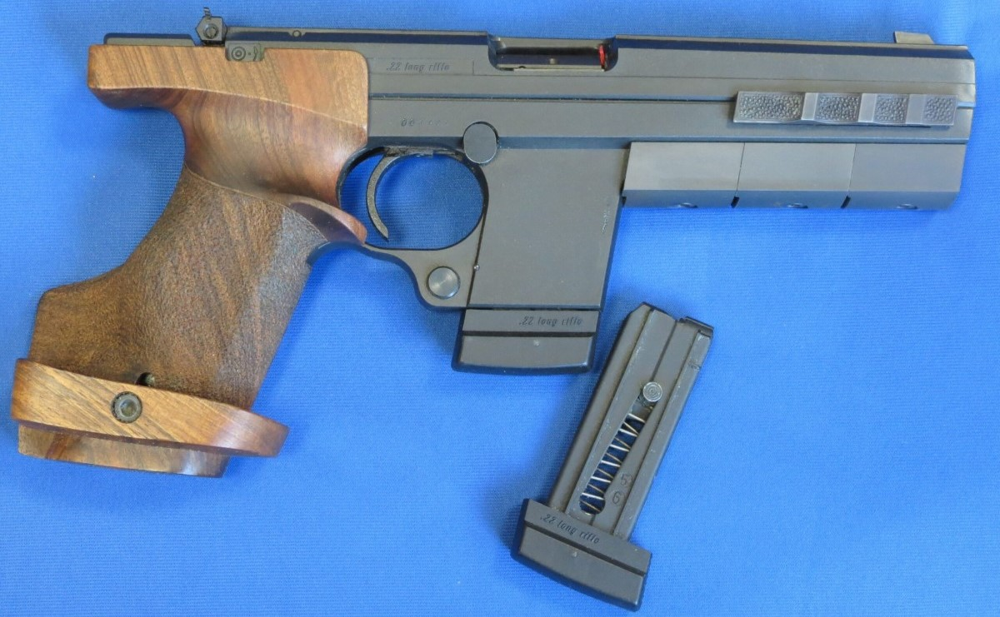
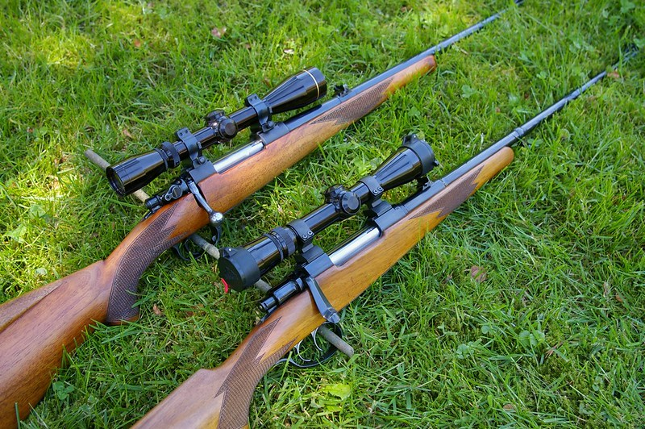

Przykładowe realizacje


Specjalistyczna Pracownia Usług Strzeleckich i Technicznych
Nasz zespół tworzą dyplomowani rusznikarze, dla których broń palna to nie tylko praca, ale przede wszystkim pasja i rzemiosło przekazywane z pokolenia na pokolenie. Łączymy wieloletnie doświadczenie w naprawie broni krótkiej, długiej oraz myśliwskiej z nowoczesnym zapleczem technologicznym, co pozwala nam na podejmowanie się nawet najbardziej skomplikowanych zleceń. Każdy członek naszej ekipy posiada niezbędne kwalifikacje i uprawnienia, a wszystkie prace prowadzimy w oparciu o rygorystyczne przepisy koncesji MSWiA nr B-142/2026, co gwarantuje pełne bezpieczeństwo prawne powierzonego nam sprzętu. Specjalizujemy się w precyzyjnej diagnostyce i naprawach głównych, przywracając sprawność jednostkom uszkodzonym lub wyeksploatowanym przy użyciu oryginalnych części i sprawdzonych technik ślusarskich. W ramach profesjonalnej konserwacji oferujemy zaawansowane czyszczenie, przeglądy okresowe oraz zabezpieczanie powierzchni, które chronią broń przed trudnymi warunkami atmosferycznymi i korozją. Dla strzelców wymagających czegoś więcej prowadzimy tuning mechanizmów spustowych, personalizację osad oraz profesjonalny montaż i zerowanie optyki, dostosowując parametry broni do indywidualnej anatomii i potrzeb użytkownika. Jako aktywni strzelcy i myśliwi doskonale rozumiemy, że niezawodność sprzętu na strzelnicy czy w łowisku jest kluczowa, dlatego do każdego egzemplarza podchodzimy z najwyższą starannością, dokumentując każdą istotną modyfikację zgodnie z literą prawa.
• Diagnostyka usterek
• Wymiana części
• Naprawa mechanizmów
• Czyszczenie
• Smarowanie
• Ochrona przed korozją
• Regulacja spustu
• Poprawa celności
• Personalizacja
• Montaż lunet
• Kalibracja
• Dobór akcesoriów


Działalność zgodna z przepisami. Wymagane pozwolenia na broń.